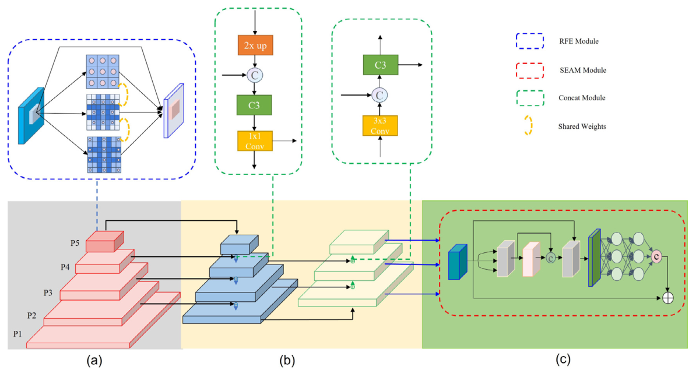
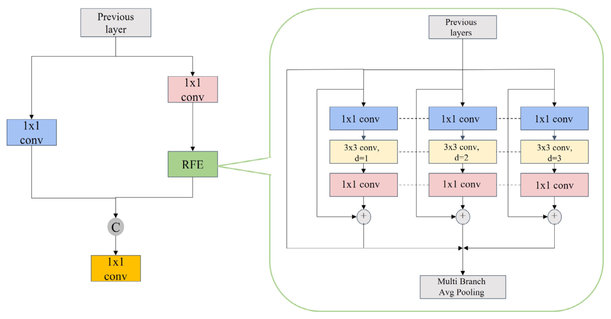
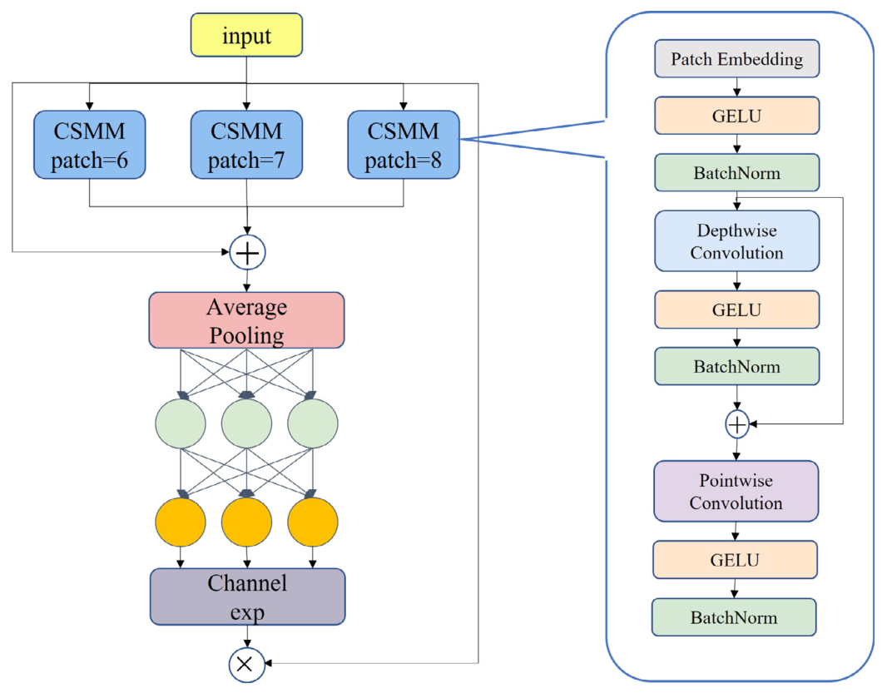
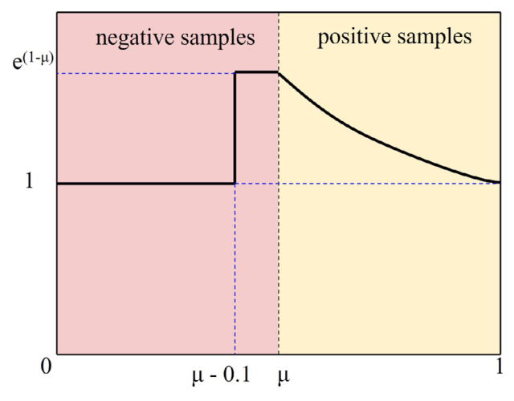
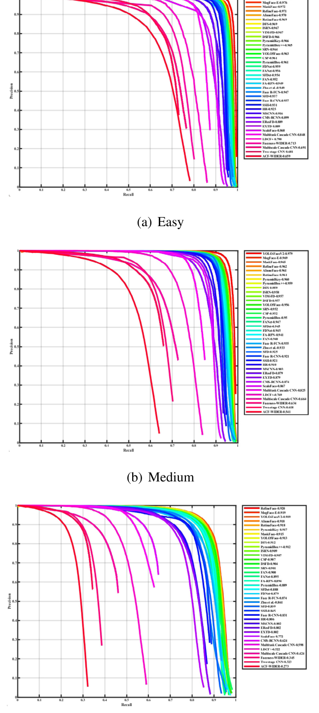
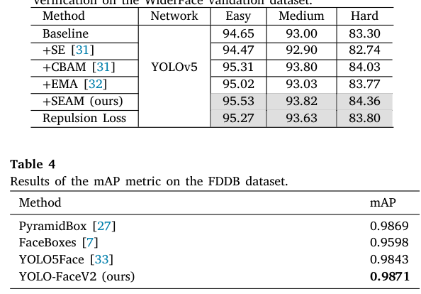
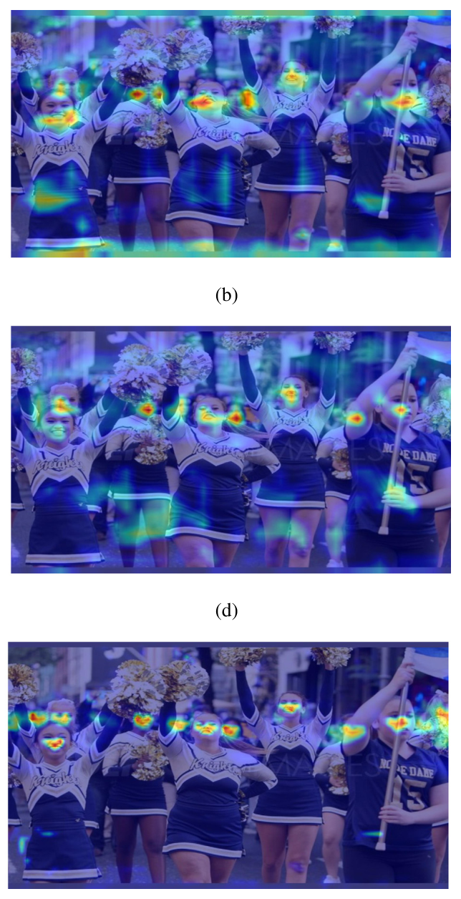

针对人脸尺度变化、遮挡与难易样本不平衡，提出 RFE 感受野增强、SEAM 遮挡感知注意力与 SWF 滑动权重函数，在 YOLOv5 上构建实时人脸检测器。
共享权重的多分支空洞卷积提取多尺度像素信息，配合有效感受野设计的 anchor 与 NWD 度量应对小脸。
利用特征图之间的关系召回被遮挡的特征，配合 Repulsion Loss 降低检测器对 NMS 的敏感。
以单一阈值 μ 与分段指数加权实现难易样本的自适应加权，避开众多超参数。
WiderFace 验证集 easy/medium/hard 取得 98.6% / 97.9% / 91.9%，超过此前 SOTA 2.3 / 2.5 / 1.1 个百分点；FDDB 98.71% mAP。




anchor 按 1:1.2 宽高比与有效感受野收缩后的尺寸估计得到，P2/P3/P4 尺寸随步长 4/8/16 逐级翻倍——anchor 先验与三层检测头一一对应。


三个模块的增益可以稳定叠加。

RFE、SEAM、SWF 分别对准尺度、遮挡、样本不平衡，消融独立自证。
将有效感受野理论引入 anchor 尺寸估计，以高斯分布形状重估离散 anchor，设计依据扎实。
以单一阈值 μ 与分段指数加权实现难易样本自适应加权，避开众多超参数。